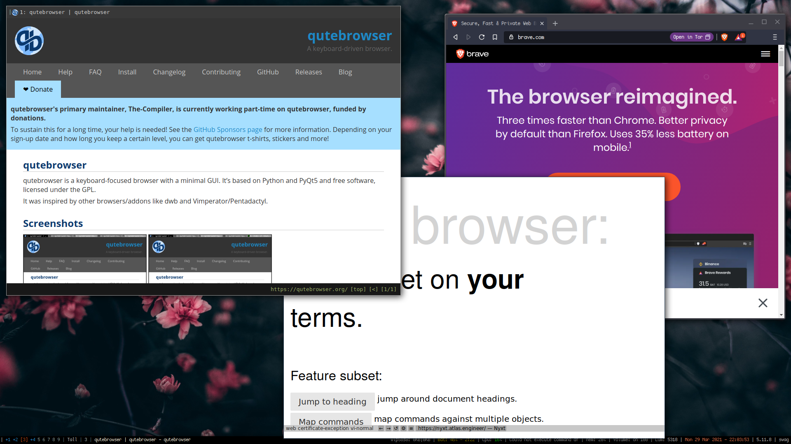

Software I Use
Sections
HOME
XMonad
NixOS
Awesome
Contact
Hello and welcome! Here is a page with the list of software that I am using on a regular basis. All of this is available through the Nix package manager which means you can run this on essentially any *Nix OS, MacOS included aside from the X11 GNU/+Linux specific window applications, think XMonad and lockscreens or whatever.
Because the entire NixOS system is declartive, you can see literally every program I have installed on the NixOS page through both the home-manager configuration file as well as the configuration.nix that defines ths system. I will add pictures of some of the cooler looking or more obsecure things as I find myself looking at a particually cool instance of something.
Appearence
- Window Management: XMonad - This is a dynamic tiling window manager written and configured in Haskell. I use this as I was an AwesomeWM user for many years and I found I like and work well with the predefined layouts it provides. AwesomeWM is written and configured in Lua, and it feels less snappy and also less stable than XMonad. It also has a stranger configuration layout, I'm not sure the developers even know what that 'lain' folder does.
- Status Bar: XMoBar - This sort of goes without saying. It works well, its text only which I like, and you can't click on it. I sort of thing bars in general just take up space and are pretty useless, but my config has a lot of system information on there which can be handy. Plus I made it really small, 8 pixles tall I think.
- Wallpaper: Nitrogen - This is just easy and works. After 5 years of making simlinks to a hard coded file to change my wallpaper, this is a nice to have in my GNU/Bloat system.
- Lockscreen: i3-Fancy-rapid - This is sort of a hacky solution to lockscreens, especially because I manually activate it with a keybinding that I remember to do once in a blue moon. It does the job though, it blurs the screen a whole bunch and is really fast. Just open computer, type password, hit enter, and you're off to the races.
Browsers
- QuteBrowser: I like this browser a lot. I hate browsers that have huge top bars that just have the three buttons to one side, a massive tab bar, then a massive search bar, then the page finally after looking through a books worth of information. This browser shows tabs if you have them, and they're small, then there is no navigation bar if you aren't actively typing in it, and it all around just works. I gave up on it a few years back when adblock didnt work well, but hey its here now and I'm here to stay.
- Brave: Yes, I do have some modern browser thing on here as well. I dont like this one as much for the aforementioned reasons, plus it just uses so many resources to idle even its wild. But for things like Netflix that use DRM, it works better and it pays you to use it, so whatever.
- Nyxt: This I just found, and its like QuteBrowser but for Emacs lovers but with vi bindings if you want. It has buffers in place of tabs which is interesting for reasons I dont understand yet, and it is even more minimal than QuteBrowser on what it looks like.

TUI Apps
I might rename this or split this up as there are sort of a lot of these but also not too many. These are things that run inside of the terminal emumlator that you use.
- Editor: ViM / NeoViM - Currently I am using NeoViM so that I can see how I like home-manager without touching my regular vimrc. My config for this is not that crazy so really this is not making a difference for me. I just mapped vi and vim to nvim and really its all the same. Nano has been entirely removed from the system of course.
- Music: Cmus - I do not know why people use mpd in conjunction with the myriad of other technical issues to run music cli style and call it symple.
insert your distro's installer -y cmus and start listening now. Or declare it if you are a true package pro.
- File Management: Ranger - I like this because it makes sense even to people who think black terminal screens are scary. It also works well on this server when I just loose something. Granted, I do not use Ranger for anything more than looking at files though. I just quit out and use regular unix commands to move stuff. I have found myself accidently deleting or loosing things with Ranger. Yes I know LF exists, I had it but it did not know what to do when I hit 'enter' so I stopped there.
- Document Creation: LaTeX with Pandoc - I mean, write in ViM, compile documents, look cool on the internet? Why would you not be using LaTeX or writing MarkDown.md files and compiling them with Pandoc?
LH